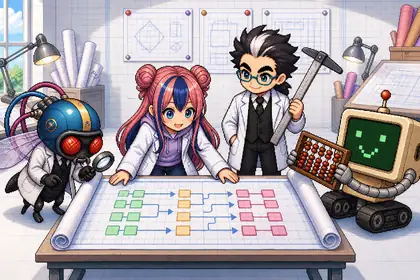
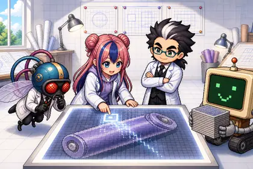
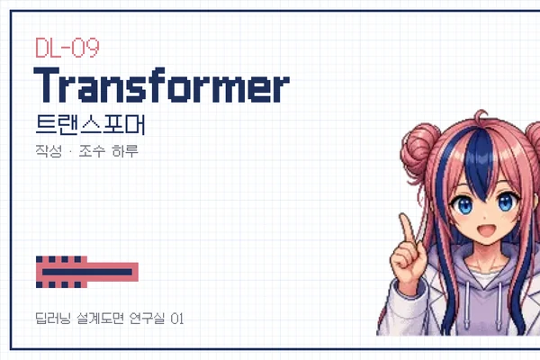
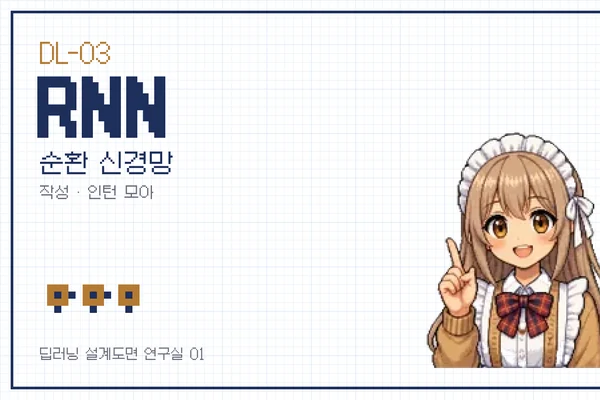
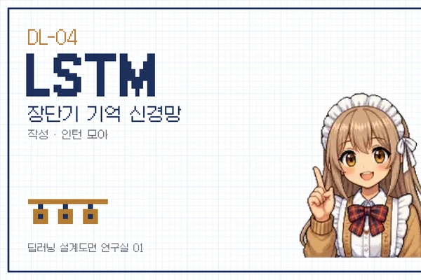
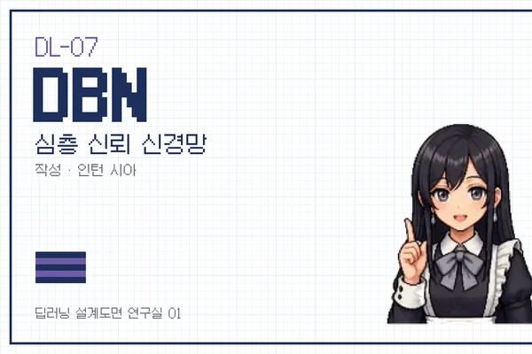
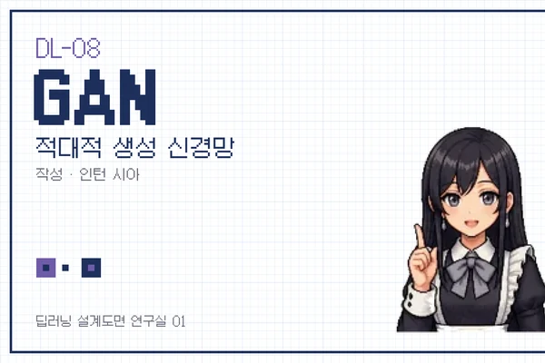

01처음 오신 분께 — 이 연구실을 3줄로
무엇을FNN부터 트랜스포머까지 대표 딥러닝 모델 9종을, 연구실 식구 세 명이 "설계도면" 한 장씩으로 그려 건넵니다. 마지막 10장은 감수 도면이에요.
왜 중요한가아홉 모델은 서로 부품을 빌려 씁니다. "곱해 더하고 구부리기"와 "메모 넘기기", "줄였다 되살리기", "점수로 섞기" 몇 가지만 알면 나머지가 읽혀요.
업무에서는표·사진·순서·글·이상 탐지·생성 중 내 일에 어떤 설계도를 꺼낼지 고르고, AI가 내놓은 설명을 감수하는 눈을 기릅니다.
코드나 수식을 몰라도 됩니다. 수식은 도면마다 동료가 한 조각씩 대신 물어봐 주고, 숫자는 작은 예로 한 번씩 손계산해 보여 줘요.
02도면 한 장 읽는 법
열 장 모두 같은 순서로 되어 있습니다. 처음 한 장만 익히면 나머지는 빠르게 넘길 수 있어요.
①표제란
도면 번호, 계열, 작성자, 감수자, 날짜가 적힌 머리 표입니다. 누가 어떤 계열을 그렸는지 여기서 봐요.
②3줄 요약 → 전체 구조도 → 부품 명세
무엇을·왜·업무에서 세 줄로 먼저 잡고, 모눈 위 구조도의 번호를 따라 부품 하나씩 설명합니다.
③왜 이 설계 | 수식은 동료가 대신 질문
앞 도면의 한계에서 이 설계가 왜 나왔는지, 그리고 수식 기호를 하나씩 읽는 법과 작은 숫자 손계산을 나란히 봅니다.
④실험대
슬라이더와 버튼으로 직접 움직여 봅니다. 주판봇의 성급한 확신이 맞는지, 초파리가 짚은 곳을 눌러 확인해요.
⑤AI 판단 코너 · 한계 · 퀴즈 · 감수 메모
AI가 내놓은 그럴듯한 답에서 틀린 곳을 찾고, 이 설계의 한계와 다음 도면, 참고 자료와 달라진 곳을 확인합니다.
03도면 목록 — 열 장과 실전 연습장
계열별로 묶었습니다. 처음이라면 01 FNN → 03 RNN → 09 트랜스포머 순서를 먼저 읽고, 나머지를 채워 가는 것을 권해요.
기본 구조 계열 · 하루

DL-01FNN · 피드포워드 신경망입력에서 출력으로 한 방향으로만 흐르는, 모든 신경망의 기본 부품. 가중합과 활성화 함수 두 가지만 알면 읽힌다.작성 · 조수 하루
DL-02CNN · 합성곱 신경망작은 필터 하나를 그림 위로 밀며 같은 무늬를 어디서든 찾는다. 사진 판정의 기본 설계.작성 · 조수 하루
DL-09Transformer · 트랜스포머순서대로 읽지 않고, 모든 단어가 서로에게 얼마나 주목할지(어텐션)를 한꺼번에 계산한다. 요즘 AI의 기본 설계.작성 · 조수 하루순서·기억 계열 · 모아

DL-03RNN · 순환 신경망한 번에 하나씩 읽으며 앞에서 읽은 것을 메모(은닉 상태)로 넘긴다. 순서가 있는 데이터의 기본 설계.작성 · 인턴 모아
DL-04LSTM · 장단기 기억 신경망잊을 것·적을 것·꺼낼 것을 문(게이트) 세 개가 정하고, 긴 기억은 컨베이어처럼 흘러간다.작성 · 인턴 모아 DL-05GRU · 게이트 순환 유닛LSTM의 문 세 개를 두 개로 줄여 부품 수를 줄였다. 많은 일에서 비슷하게 잘한다.작성 · 인턴 모아압축·생성 계열 · 시아
DL-06AE · 오토인코더입력을 작은 요약으로 줄였다가 다시 펼쳐 원래대로 되살린다. 정답표 없이 배운다. 작성 · 인턴 시아
작성 · 인턴 시아
작성 · 인턴 시아
작성 · 인턴 시아
작성 · 인턴 시아
작성 · 인턴 시아

DL-07DBN · 심층 신뢰 신경망작은 확률 부품(RBM)을 한 층씩 미리 학습해 쌓고, 마지막에 정답표로 다듬는다. 깊은 학습을 다시 가능하게 한 역사적 설계.
DL-08GAN · 적대적 생성 신경망만드는 쪽(생성자)과 가려내는 쪽(판별자)이 겨루며 둘 다 실력이 는다. 진짜 같은 데이터를 만든다.감수 · 초파리 & 주판봇
04왜 이렇게 나눠 그렸나

하루 · 기본 구조저는 다른 도면이 모두 빌려 쓰는 기본 부품(FNN), 그림을 보는 부품(CNN), 그리고 그 둘을 다 품는 요즘 설계(트랜스포머)를 맡았어요.

모아 · 순서·기억기록을 모아 두는 걸 좋아해서, 메모를 넘기고 지키는 세 장(RNN · LSTM · GRU)을 맡았어요.

시아 · 압축·생성정리하고 지켜보는 일이 제 몫이라, 줄이고(오토인코더) 쌓고(DBN) 가려내는(GAN) 세 장을 맡았어요.
초파리 & 주판봇 · 감수우리는 아홉 장을 한 장에 모아 감수했어. 참고 자료에서 고칠 곳 7건, 덧붙일 곳 4건을 찾았지. 자세한 건 감수 의견서에.